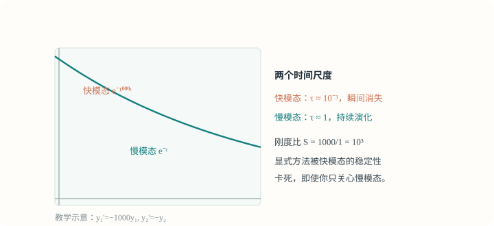
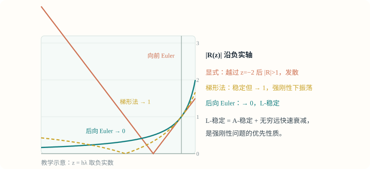

CHAPTER 27 · NUMERICAL ANALYSIS
刚性方程与线性多步法：A-稳定与 BDF
上一章我们看到显式方法的稳定域有界。当系统同时含有“极快”与“极慢”两种时间尺度时，这个界会强迫步长小得离谱——即使你根本不关心那个快模态。这就是刚性，它的解法是彻底换一套思路。
01 · 什么是刚性
输入：ODE 系统 y'=f(t,y) 及其在线性化点处的雅可比特征值 λᵢ。输出：在长区间上稳定的数值解。假设：Re(λᵢ)<0（系统本身稳定），且特征值实部差异极大。
工程上实用的定义是：存在多个差异巨大的特征时间尺度，且最快尺度决定了显式方法的稳定性。对线性系统 y'=Ay，定义刚度比：
工程上常以 S>10² 为刚性、S>10⁶ 为高度刚性。它带来的后果是：显式方法的稳定性条件 h<2/|λ_max| 会把 h 压到最快模态的量级，而解本身可能只需慢模态的精度。图 1 给出一个极简的 2×2 例子。

y₁'=−1000y₁+y₂、y₂'=−y₂：特征值 −1000 与 −1，刚度比 S=10³。快模态（橙）在 t≈10⁻³ 就衰减殆尽，慢模态（青）却要演化到 t~1。若只关心慢模态，显式方法仍被迫取 h≲2×10⁻³——是稳定性而非精度在卡步长。02 · A-稳定与 L-稳定
把方法用到 Dahlquist 测试方程 y'=λy（Re λ<0），得到 yₙ₊₁=R(z)yₙ（z=hλ）。A-稳定指 |R(z)|≤1 对整个左半平面成立——于是对任意 h>0 都稳定，正是处理刚性所需。
更强的性质是 L-稳定：A-稳定且 R(z)→0 当 Re(z)→−∞。它能让极快模态被快速抹掉，避免强刚性下的伪振荡。
| 方法 | 类型 | R(z) | A-稳定 | L-稳定 |
|---|---|---|---|---|
| 向前 Euler | 显式 | 1+z | 否 | 否 |
| RK4 | 显式 | 1+z+z²/2+z³/6+z⁴/24 | 否 | 否 |
| 向后 Euler | 隐式 | 1/(1−z) | 是 | 是 |
| 梯形法 | 隐式 | (1+z/2)/(1−z/2) | 是 | 否 |
| BDF2 | 隐式 | — | 是 | 否 |

z=hλ 的 |R(z)|。向后 Euler（青）1/(1−z) 从 1 降到 0，是 L-稳定；梯形法（黄）|R|→1，虽 A-稳定但在强刚性下会产生不衰减的伪振荡；向前 Euler（橙）越过 z=−2 就 |R|>1，发散。03 · 线性多步法与 Adams
Runge–Kutta 在步内多点采样；线性多步法（LMM）则用前面若干步的历史值。通式是：
若 β_k=0 则为显式（Adams–Bashforth，AB），否则为隐式（Adams–Moulton，AM）。两个常用公式：
AB 每步只需一次 f 求值（比 RK4 便宜），但显式、稳定域有界，不适合刚性。AM 更稳定却是隐式，于是常用预测-校正：先用 AB 预测、再用 AM 校正一次。这提供了误差估计，也是自适应 LMM 的基础。
04 · BDF 方法与 Dahlquist 障碍
Adams 系对 f 插值逼近积分；BDF（向后差分公式，Gear 方法）则对 y 插值、在当前点令其导数等于 f，且只保留右端当前项，因此都是隐式的：
最常用的是 BDF2：3y_{n+2}−4y_{n+1}+y_n=2h f_{n+2}。它的稳定性由两条经典定理划定：
- Dahlquist 第一障碍：A-稳定的线性多步法，阶数至多为 2。
- Dahlquist 第二障碍：在 A-稳定的线性多步法中，阶数不能超过 2；而二阶 A-稳定方法中，梯形法的误差常数最小。
因此只有 BDF1（=向后 Euler）与 BDF2 是 A-稳定；BDF3–6 退为 A(α)-稳定（稳定区为左半平面内夹角小于 α 的扇形），α 随阶数增大而减小（BDF5 约 51°、BDF6 约 18°）。工程上很少超过 BDF5。
05 · 失败边界
| 场景 | 原因 | 表现 | 对策 |
|---|---|---|---|
| 用显式方法解刚性 | 稳定域有界 | 步长被卡死/发散 | 换 A-稳定隐式 |
| 用梯形法解强刚性 | R(z)→−1，非 L-稳定 | 解出现不衰减伪振荡 | 换后向 Euler / BDF2 |
| 追求高阶 A-稳定 | Dahlquist 障碍 | 根本不存在 | 阶数≤ 2 或用 A(α)-稳定 |
| 隐式每步开销大 | 每步解非线性方程 | 单步慢 | Newton + 稀疏 Jacobian；用大 h 总步数少 |
与上一章分演：上一章说“显式稳定域有界”；这一章说“隐式可以 A-稳定”。判断一个实际问题是不是刚性，有一个实用的经验：若把步骤减小十倍后显式方法才稳，而解的精度早已饱和，那它多半是刚性的。
06 · 实验与选型
对 y'=−100y, y(0)=1，取 h=0.05（于是 z=hλ=−5），比较各方法的放大因子 |R(z)| 与 t=1 处的值（真值 e⁻¹⁰⁰≈3.7×10⁻⁴⁴，即已衰减为零）：
失败边界（可验证）：第一，|R(−5)|>1 就发散，与精度无关；第二，梯形法稳定但 R→−1，强刚性下余留振荡；第三，BDF2 稳定且阻尼快。
import math
z = -5.0 # z = h*lambda, h=0.05, lambda=-100
R_euler = 1 + z # 向前 Euler
R_be = 1 / (1 - z) # 向后 Euler
R_trap = (1 + z/2) / (1 - z/2) # 梯形法
# BDF2: (3-2z)R^2 - 4R + 1 = 0
# R = (2 +- sqrt(1+2z)) / (3-2z)
disc = complex(1 + 2*z) ** 0.5
R_bdf2 = abs((2 + disc) / (3 - 2*z))
for name, R in [("euler", R_euler), ("backward Euler", R_be),
("trapezoid", R_trap), ("BDF2", R_bdf2)]:
mag = abs(R) if not isinstance(R, float) else abs(R)
stable = mag <= 1.0
print(f"{name:15s} |R(-5)|={mag:.4f} stable={stable}")
# 向前 Euler 会发散，而向后 Euler 稳定
assert abs(R_euler) > 1.0
assert abs(R_be) < 1.0
assert R_bdf2 <= 1.0这段纯 Python 实验验证了：|hλ|=5 时向前 Euler 必发散；向后 Euler 与 BDF2 稳定且强烈阻尼；梯形法虽稳定但 |R|≈0.43 且符号为负（会产生振荡）。工业库 scipy.integrate.solve_ivp(method='BDF') 与 'Radau' 就是这类隐式方法。
| 问题 | 推荐方法 | 理由 |
|---|---|---|
| 非刚性，高精度 | RK45 / DOP853（上章） | 显式、自适应，便宜 |
| 刚性，中小规模 | BDF2 或 Radau IIA | A-稳定（或 L-稳定） |
| 刚性，大规模稀疏 | BDF + Newton/稀疏 Jacobian | 新步数少、可重用分解 |
原始资料与延伸阅读
本章将已知结论与本文独立构造的数值示例区分开：刚度比定义、Dahlquist 两个障碍、BDF1–2 的 A-稳定性与 BDF3–6 的 A(α)-稳定性、各方法的 R(z) 均为理论结果；图 1、图 2 与实验中的放大因子为本文教学演示（已简化）。
- C. W. Gear, The automatic integration of ordinary differential equations, Comm. ACM 14 (1971) 176–179。BDF（Gear）方法及其变阶/变步长策略。
- E. Hairer, S. P. Nørsett, G. Wanner, Solving Ordinary Differential Equations I, Springer, 2nd ed., 1993。刚性、A-稳定、Dahlquist 障碍与 BDF 理论。
- SciPy · scipy.integrate.solve_ivp：
BDF、Radau（隐式、适合刚性）与RK45（显式）的选用。